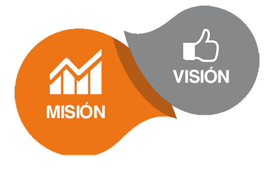
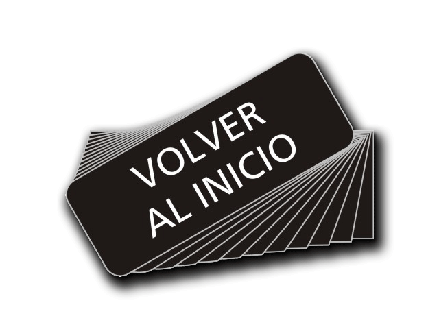
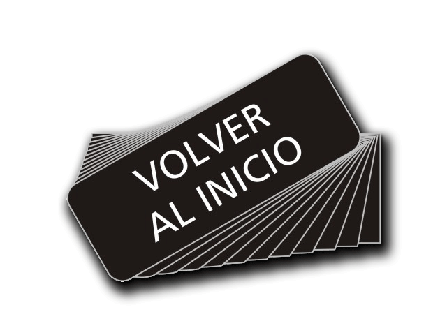

OBJETIVOS, MISIÓN Y VISIÓN DEL CENTRO EDUCATIVO
OBJETIVOS
• Tratar a los alumnos con problemas o defectos por personal especializado técnico o pedagógicamente.
• Que todo todo profesorado laborante en el centro básico tenga su preparación académica según el nivel que atiende.
• Involucrar a los padres de familia en el proceso enseñanza aprendizaje.
• Convertir la escuela en un constructivista e innovador.
MISIÓN Y VISIÓN

MISION
El Centro de Educación Básica “El Progreso” es una institución educativa Publica cuyo propósito es servir a la comunidad,
es además, cambiante, eficiente, comprometida a formar y transformar al educando en un ambiente agradable de solidaridad, comprensión,
fomentando valore y principios integrales con el propósito de lograr estudiantes con actitudes emprendedoras de calidad, amantes de la naturaleza,
con conciencia crítica y patriótica encaminados al engrandecimiento comunal, municipal y del país; todo ello con el apoyo de los demás acores de la comunidad educativa,
y las diferentes instituciones gubernamentales y privadas que funcionan en la periferia del Centro Educativo.
VISIÓN
El Centro de Educación Básica “El Progreso” será una institución que proporciona una educación creativa participativa, investigativa,
innovadora e integral de todos los sectores involucrados en el proceso de enseñanza aprendizaje. Proporcionando en el educando principios de igualdad,
fraternidad, democrático, libertad y seguridad de sí mismo para enfrentar los retos de la competencia y la globalización. Tiene como visión de futuro egresar alumnos capaces
de poderse desenvolver en la sociedad con las competencias que vayan acorde a los avances tecnológicos actuales.
 
